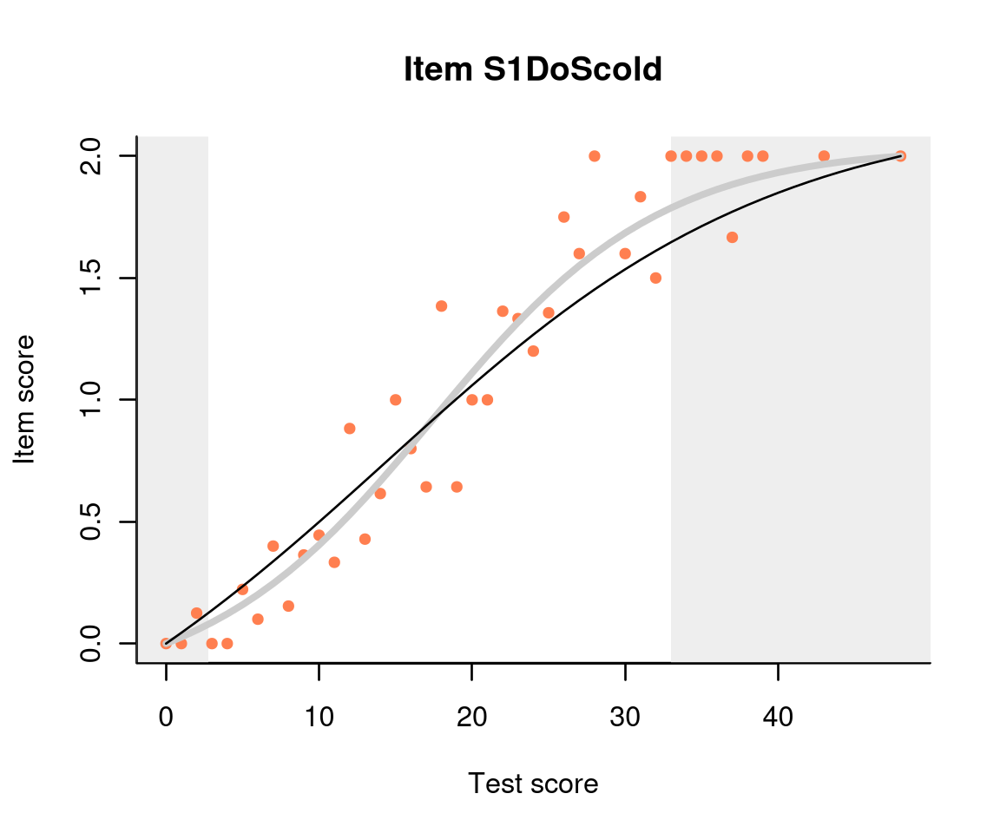
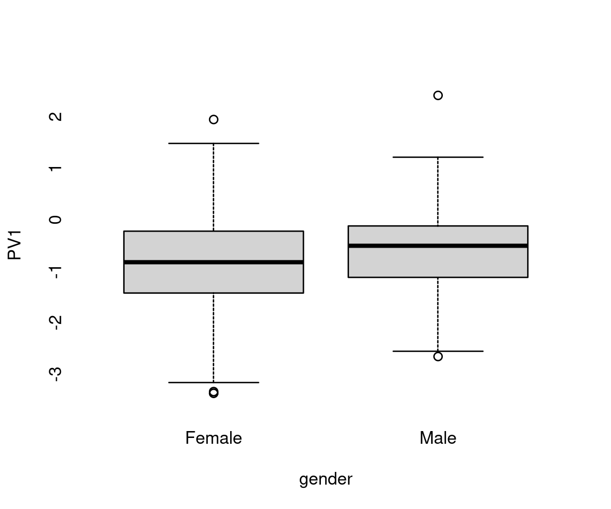

vignettes/dexter.Rmd
dexter.RmdDexter is an R (R Development Core Team 2005) package intended as a robust and fairly comprehensive system for managing and analyzing test data organized in booklets. It includes facilities for importing and managing test data, assessing and improving the quality of data through basic test-and-item analysis, fitting an IRT model, and computing various estimates of ability.
Dexter differs from other psychometric software both in terms of the tools it includes as in those it omits. The data management component is quite developed to promote data integrity. Many psychometric methods not found elsewhere are provided, such as Haberman’s (2007) interaction model generalized for polytomous items, new methods for exploratory and confirmatory DIF analysis, support for the 3DC method of standard setting, and many more. On the other hand, there is no support for multivariate IRT models, 2PL and 3PL models and other methods sufficiently represented in other packages. The central IRT model is a polytomous generalization of the extended marginal Rasch model: we call it the Extended Nominal Response Model (ENORM).
We believe that, at least in high-stakes tests, the scoring rules
should be explicit, and that the psychometric model should be developed
from the scoring rules, not vice versa. Correspondingly, a
dexter project starts with the user supplying the
scoring rules for all items in the test. These must be given as a data
frame containing, in any order, three columns named exactly
item_id, response, and
item_score. An example is provided with the package:
## item_id response item_score
## 1 S1WantCurse 0 0
## 2 S1WantCurse 1 1
## 3 S1WantCurse 2 2
## 4 S1DoCurse 0 0
## 5 S1DoCurse 1 1
## 6 S1DoCurse 2 2
## 7 S1WantScold 0 0
## 8 S1WantScold 1 1
## 9 S1WantScold 2 2
## 10 S1DoScold 0 0These are the scoring rules for the verbal aggression data (Vansteelandt 2000) analysed in great detail in
(Paul De Boeck 2004) and many others. 243
females and 73 males have assessed on a 3-point scale (‘yes’, ‘perhaps’,
or ‘no’) how likely they are to become verbally aggressive in four
different frustrating situations. Two of these situations are caused by
the respondent, and in the others the blame is on others. Above we show
the first 10 of 24*3=72 lines listing all possible response categories
for the 24 items: column response contains the strings that
will represent each response in the data, and item_score
shows the score that will be given to each response.
In dexter, item scores are always integers, and the lowest score for each item is always 0. However, the integers need not be contiguous: for example, 0,1,4 are admissible scores for an item. The verbal aggression data does not come from a cognitive test, so the item scores are the same as the responses. This approach can be used with open items scored externally (typically, by human markers). With closed questions, responses and scores will differ. Keeping them separate allows for extra flexibility – for example, it is easy to correct a misspecified key. Missing value codes may be listed explicitly and assigned scores. Any responses found in the data but not in the scoring rules will automatically be assigned a score of 0.
With the scoring rules defined, a new dexter project is created with:
db = start_new_project(verbAggrRules, "verbAggression.db", person_properties=list(gender="unknown"))The first argument is the data frame with the scoring rules, the second is an optional name for the data base defaulting to ‘dexter.db’, and the third one is an optional list of person covariates. In this case, we have declared that, in addition to the response data, we will also input the gender of the respondents, with any missing data for gender represented as ‘unknown’.
Now that an empty data base has been created, we can add the actual
response data. Many researchers seem to keep response data in a
rectangular data format with a row for each person and a column for each
item (and person covariate, if any). R functions like
read.table, read.csv or packages like
readxl, haven, readr, foreign allow
the user to read data in this shape from a variety of formats: text
files, Excel worksheets, SPSS binary files, etc. Once that the data for
a test form (booklet) has been made available to R as a data frame, it
can be added to the data base. For our verbal aggression data:
add_booklet(db, verbAggrData, "agg")## $items
## [1] "S1DoCurse" "S1DoScold" "S1DoShout" "S1WantCurse" "S1WantScold"
## [6] "S1WantShout" "S2DoCurse" "S2DoScold" "S2DoShout" "S2WantCurse"
## [11] "S2WantScold" "S2WantShout" "S3DoCurse" "S3DoScold" "S3DoShout"
## [16] "S3WantCurse" "S3WantScold" "S3WantShout" "S4DoCurse" "S4DoScold"
## [21] "S4DoShout" "S4WantCurse" "S4WantScold" "S4WantShout"
##
## $person_properties
## [1] "gender"
##
## $columns_ignored
## [1] "anger"The first argument is the data base connection created with
start_new_project, the second is the data frame with the
data (in our case, supplied with the package), and the third one is a
short name by which the booklet will be known to
dexter. If the test involves more than one booklet, we
simply call the function several times to enter them one after the
other.
All column names that have an exact match in the item_id
column of the scoring rules table will be treated as test items, and all
columns declared as person_properties in start_new_project
will be input and treated as such. Columns that do not have a match in
either the scoring rules or in the person properties will be ignored.
The user can choose if t responses not declared in the scoring rules
should generate an error or should be added with a score of 0. The
output of function, add_booklet is a list containing the
names of the columns imported as items and the names of the columns
imported as person_properties.
In addition to the person properties provided with the booklets,
users can also provide an arbitrary number of item properties. These are
supplied as a data frame, one column per item property, and including an
item ID column called exactly item_id. The verbal
aggression data is organized in a design where three kinds of behaviour
are considered in two modes with regard to four different frustrating
situations that can be blamed on the self or on others. We input these
facets of the design as item properties in the following way:
add_item_properties(db, verbAggrProperties)## 4 item properties for 24 items added or updatedThe first argument is the data base connection created with
start_new_project, and the second is a data frame with the
item properties. For our example, the data frame is supplied with the
package, and it looks like this:
head(verbAggrProperties)## item_id behavior mode blame situation
## 1 S1DoCurse Curse Do Other Bus
## 2 S1DoScold Scold Do Other Bus
## 3 S1DoShout Shout Do Other Bus
## 4 S1WantCurse Curse Want Other Bus
## 5 S1WantScold Scold Want Other Bus
## 6 S1WantShout Shout Want Other BusOf course, the item_id must be exactly as specified in
the scoring rules. Functions like get_booklets,
get_items and get_persons help users keep
track of what has been entered in the database:
get_booklets(db)## booklet_id n_items n_persons booklet_max_score
## 1 agg 24 316 48## item_id behavior mode blame situation
## 1 S1DoCurse Curse Do Other Bus
## 2 S1DoScold Scold Do Other Bus
## 3 S1DoShout Shout Do Other Bus
## 4 S1WantCurse Curse Want Other Bus
## 5 S1WantScold Scold Want Other Bus
## 6 S1WantShout Shout Want Other Bus
get_persons(db) |>
glimpse()## Rows: 316
## Columns: 2
## $ person_id <chr> "dx_0000001", "dx_0000002", "dx_0000003", "dx_0000004", "dx_…
## $ gender <chr> "Male", "Female", "Female", "Female", "Female", "Female", "F…All analyses are available through R syntax, which makes it easy to automate repeated analyses or program customized reports. A comprehensive graphical interface for dexter is available as a separate add-on package, dextergui. In this vignette, we concentrate on command language.
The analysis of test data usually starts with some data exploration,
largely drawn from the tool chest of classical test theory. We call it
TIA, short for ‘test and item analysis’. The statistics are produced
with function tia_tables and saved in an object:
tt = tia_tables(db)At the test (form) level, we have some basic information for each booklet: the number of persons and the number of items, coefficient alpha, the average p-value and the average correlation between item scores and total scores:
tt$booklets| booklet_id | n_items | alpha | mean_pvalue | mean_rit | mean_rir | max_booklet_score | n_persons |
|---|---|---|---|---|---|---|---|
| agg | 24 | 0.888 | 0.339 | 0.527 | 0.468 | 48 | 316 |
At item level, there are the mean scores, the p-values (mean scores rescaled between 0 and 1 for comparability across items), the correlation of each item with the total score and the rest score for the booklets. This table can be shown in a variety of ways: for each booklet separately, averaged across booklets, or in a format that facilitates comparisons of items between booklets:
tt$items| booklet_id | item_id | mean_score | sd_score | max_score | pvalue | rit | rir | n_persons |
|---|---|---|---|---|---|---|---|---|
| agg | S1DoCurse | 1.082 | 0.808 | 2 | 0.541 | 0.582 | 0.519 | 316 |
| agg | S1DoScold | 0.832 | 0.817 | 2 | 0.416 | 0.651 | 0.596 | 316 |
| agg | S1DoShout | 0.468 | 0.710 | 2 | 0.234 | 0.520 | 0.460 | 316 |
| agg | S1WantCurse | 1.123 | 0.828 | 2 | 0.562 | 0.537 | 0.468 | 316 |
| agg | S1WantScold | 0.930 | 0.852 | 2 | 0.465 | 0.593 | 0.528 | 316 |
| agg | S1WantShout | 0.712 | 0.778 | 2 | 0.356 | 0.529 | 0.464 | 316 |
| agg | S2DoCurse | 1.003 | 0.834 | 2 | 0.502 | 0.590 | 0.527 | 316 |
| agg | S2DoScold | 0.684 | 0.781 | 2 | 0.342 | 0.633 | 0.578 | 316 |
| agg | S2DoShout | 0.326 | 0.616 | 2 | 0.163 | 0.532 | 0.481 | 316 |
| agg | S2WantCurse | 1.222 | 0.774 | 2 | 0.611 | 0.529 | 0.465 | 316 |
| agg | S2WantScold | 0.959 | 0.840 | 2 | 0.479 | 0.562 | 0.494 | 316 |
| agg | S2WantShout | 0.734 | 0.816 | 2 | 0.367 | 0.563 | 0.498 | 316 |
| agg | S3DoCurse | 0.576 | 0.693 | 2 | 0.288 | 0.497 | 0.438 | 316 |
| agg | S3DoScold | 0.294 | 0.557 | 2 | 0.147 | 0.505 | 0.458 | 316 |
| agg | S3DoShout | 0.104 | 0.345 | 2 | 0.052 | 0.344 | 0.310 | 316 |
| agg | S3WantCurse | 0.810 | 0.766 | 2 | 0.405 | 0.474 | 0.406 | 316 |
| agg | S3WantScold | 0.462 | 0.654 | 2 | 0.231 | 0.521 | 0.467 | 316 |
| agg | S3WantShout | 0.282 | 0.534 | 2 | 0.141 | 0.438 | 0.389 | 316 |
| agg | S4DoCurse | 0.883 | 0.786 | 2 | 0.441 | 0.528 | 0.463 | 316 |
| agg | S4DoScold | 0.566 | 0.725 | 2 | 0.283 | 0.567 | 0.510 | 316 |
| agg | S4DoShout | 0.225 | 0.513 | 2 | 0.112 | 0.424 | 0.377 | 316 |
| agg | S4WantCurse | 0.978 | 0.774 | 2 | 0.489 | 0.495 | 0.427 | 316 |
| agg | S4WantScold | 0.589 | 0.744 | 2 | 0.294 | 0.573 | 0.515 | 316 |
| agg | S4WantShout | 0.424 | 0.684 | 2 | 0.212 | 0.453 | 0.391 | 316 |
Finally, distractor plots provide visual information at response level. This is a non-parametric regression of the probability of each response (including non-response) on the total score, particularly useful to detect issues with multiple choice items due to wrong keys or, simply, sub-optimal item writing. Our example data is not cognitive, so the distractor plots resemble the trace lines of partial credit items:
distractor_plot(db, 'S1DoShout')In addition, dexter provides a new diagnostic tool with Haberman’s interaction model (Haberman 2007), which we have generalized to also handle polytomous items. This ingenious idea can be described in several ways:
The last characterization is arguably the most salient: the interaction model reproduces faithfully the item difficulties, the correlations of the item scores with the total scores on the test, and the total score distribution. In other words, it captures all aspects of the data that are psychometrically relevant, leaving out mostly random noise. Because of that, it can be used instead of the data when assessing the fit of the more restrictive calibration model (Rasch, in the case of dichotomous data).
The interaction model can be fit for any booklet in the test with
function fit_inter; results are best appreciated in
graphical form:

This plot shows three item-total regressions. The pink dots show the
observed regression: the average score on the item given the total score
on the test. There are also two regression models: the interaction model
is shown with a thicker but lighter line, and the Rasch model is shown
with a thinner, darker line. The two regression lines cross where the
data is the densest. In this case they are very similar – when not, the
dots tend to cluster around the regression line from the interaction
model. The observed regression is not shown by default, so we had to
change the show.observed parameter. The light gray
‘curtains’ are drawn by default at the 5% lowest and the 5% highest sum
scores, directing the eye to where the ‘action’ really happens. A more
detailed discussion of the item-total regressions may be found on our
blog.
We can show the response category probabilities instead of the expected item score:
plot(m, 'S1DoCurse', summate=FALSE)On the other hand, we can represent scores on subtests as super-items
and analyse these as normal items (function fit_domains).
For example, treating the four frustrating situations in the verbal
aggression example as domains, we get:
mSit = fit_domains(db, item_property= "situation")
plot(mSit)So far, we have been exploring the data, booklet per booklet, making
sure that there are no obvious issues, that item quality is acceptable,
and the model we intend to use for calibration fits the data reasonably
well. The actual estimation of the calibration model, over all booklets
concurrently, is done with function fit_enorm:
parms = fit_enorm(db)The default estimation method is conditional maximum likelihood (CML). The alternative is to use a Gibbs sampler (Bayesian Calibration).
parms_gibbs = fit_enorm(db, method='Bayes')The function returns a parameters object, which has plot
and coef methods.
| item_id | item_score | mean_beta | SD_beta | 95_hpd_b_left | 95_hpd_b_right |
|---|---|---|---|---|---|
| S1DoCurse | 1 | -1.348 | 0.152 | -1.629 | -1.067 |
| S1DoCurse | 2 | -0.648 | 0.144 | -0.954 | -0.385 |
| S1DoScold | 1 | -0.680 | 0.142 | -0.966 | -0.409 |
| S1DoScold | 2 | -0.250 | 0.162 | -0.559 | 0.056 |
| S1DoShout | 1 | 0.309 | 0.154 | 0.012 | 0.613 |
| S1DoShout | 2 | 0.385 | 0.202 | 0.013 | 0.791 |
The parameters object can be passed to the functions that estimate
person parameters. For example ability, which produces
maximum likelihood (MLE) and Bayes expected a posteriori (EAP)
estimators with different priors, and plausible_values.
Being able to choose between a frequentist or a Bayesian approach to the
estimation of either the item parameters or the person parameters
enables the user to consider various sources of uncertainty.
Plausible values are most often used for characterizing and comparing populations. For the verbal aggression example, we get:
pv = plausible_values(db, parms)
plot(density(pv$PV1), bty='l', main='verbal aggression', xlab='plausible value')For a direct comparison on gender:
pv = merge(pv, get_persons(db))
boxplot(PV1~gender, data=pv, border='black')
It appears that we cannot find a marked difference in verbal aggression between male and female respondents overall. Interesting structural differences are revealed with the profile plot, originally designed as a tool to study differential item functioning (DIF).
dexter has two functions for DIF: an exploratory one, concentrated on item pairs (Bechger and Maris 2015), and a hypothesis-driven one, the profile plot. There is a separate vignette for either. In our verbal aggression example, we can explore visually the hypothesis that men and women differ in the mode of behaviour (do or want to do):
profile_plot(db, item_property='mode', covariate='gender')The results are striking: at any level of overall aggression, women want more than they actually do, as compared to men. Even if this is self-reported rather than actually observed behaviour, there is a stronger social expectation for women to suppress aggressive behaviour.
dexter contains many further tools and methods, which are discussed in separate vignettes. Most of the functions in the package accept an arbitrarily complex logical predicate involving booklets, items, responses, persons, person and item properties etc., on which to subset the data. An obvious use is to exclude, in a flexible way, some data from analysis. As subsetting can be applied to the functions independently, we can, e.g., estimate a model on one subset of examinees and apply it to another.
close_project(db)
RcppArmadillo::armadillo_reset_cores()